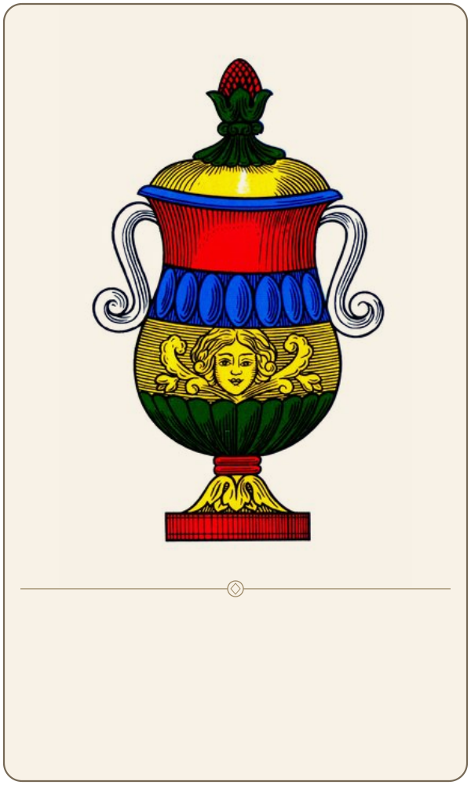
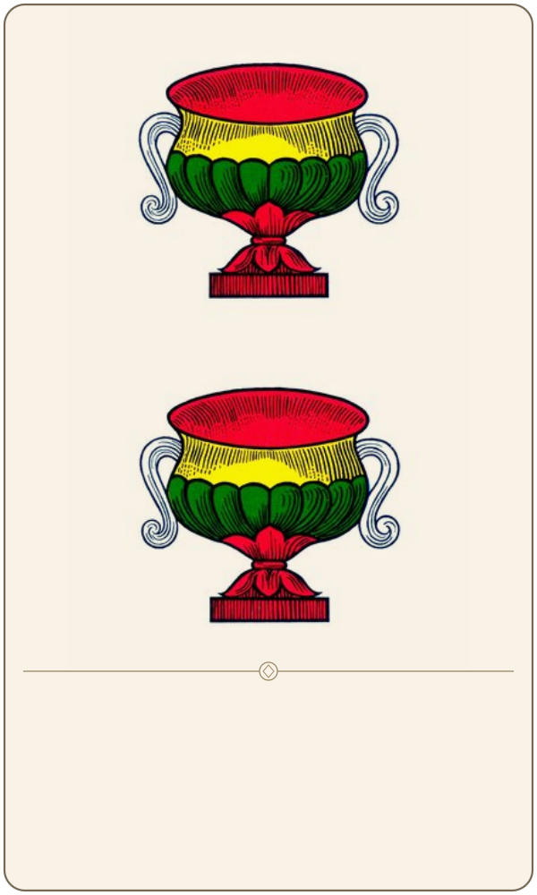
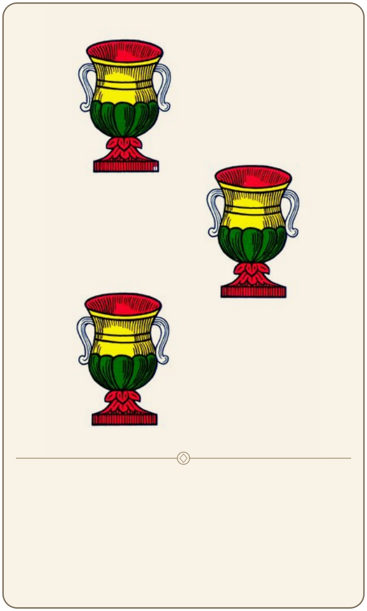
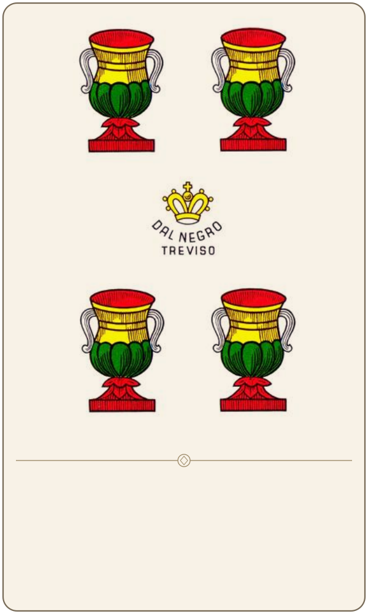
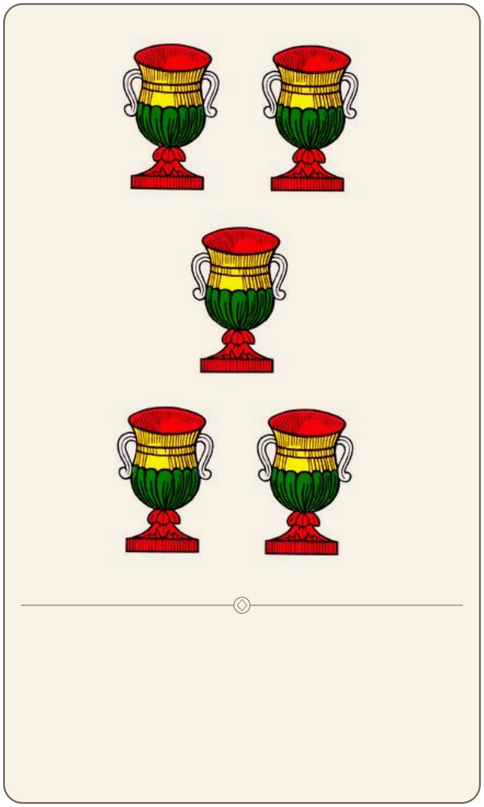
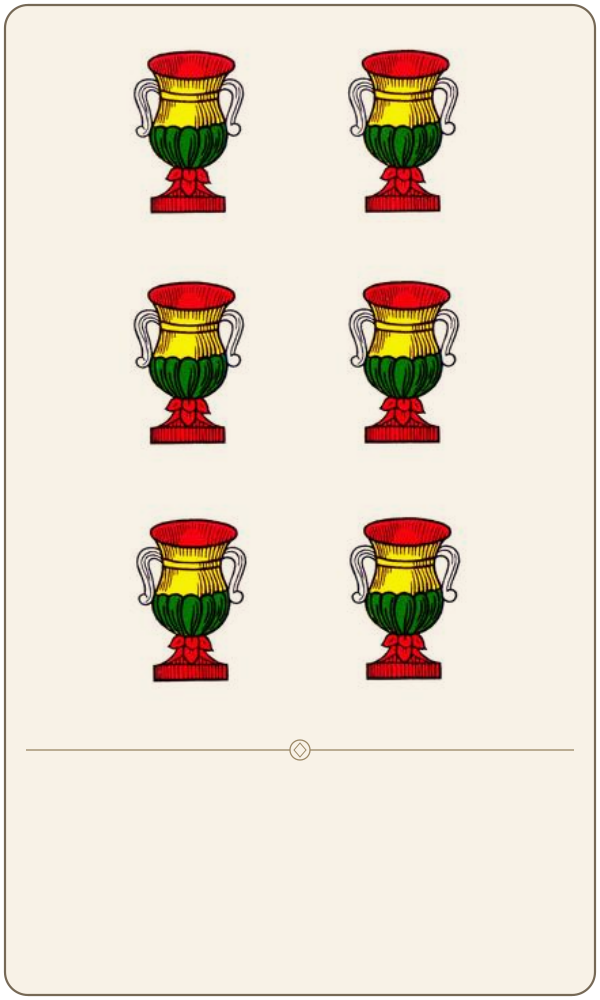
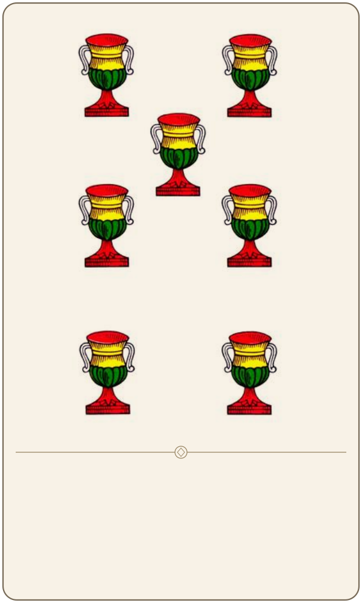
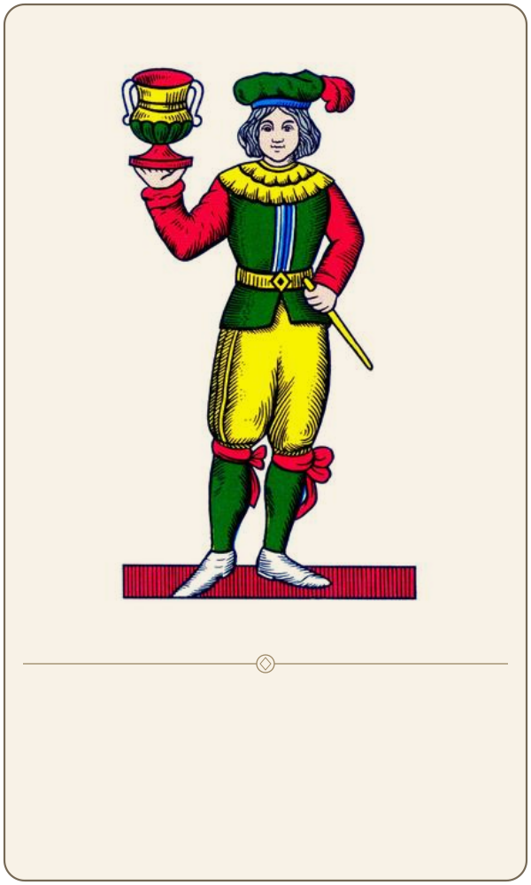
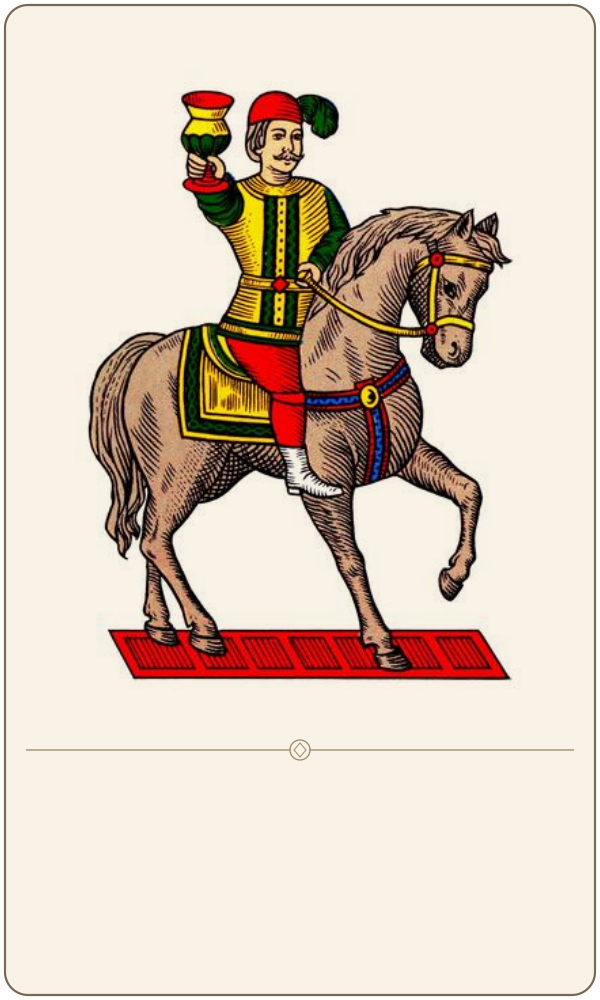
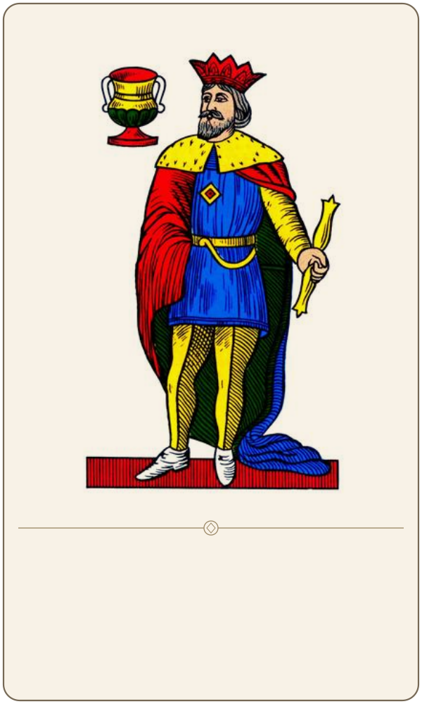

Coppe — carte napoletane originali
Illustrazioni autentiche, mantenute identiche al mazzo sorgente. Il sigillo geometrico è aggiunto **solo sul divisorio esterno al disegno**. Proposta in attesa di approvazione.




























